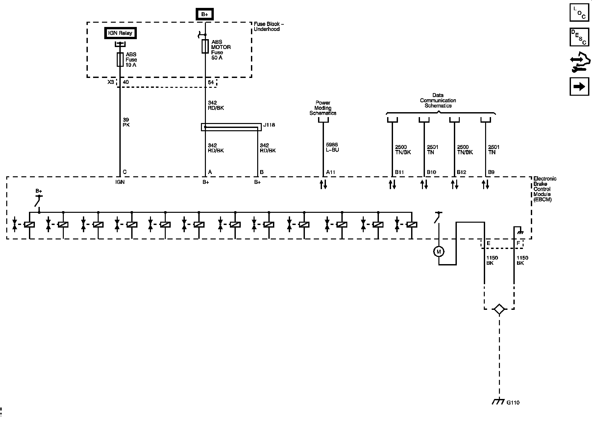
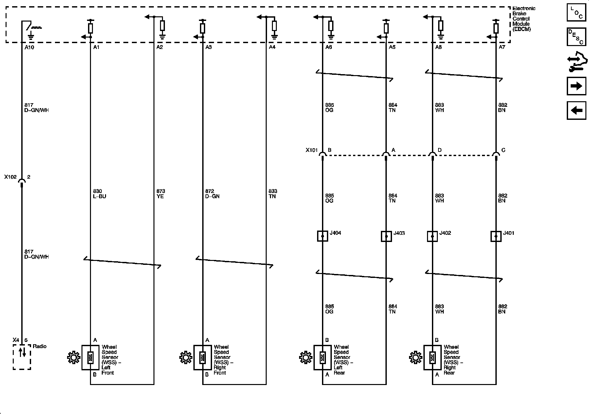
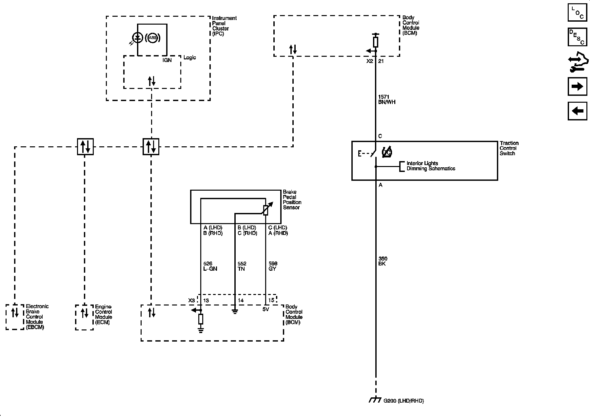
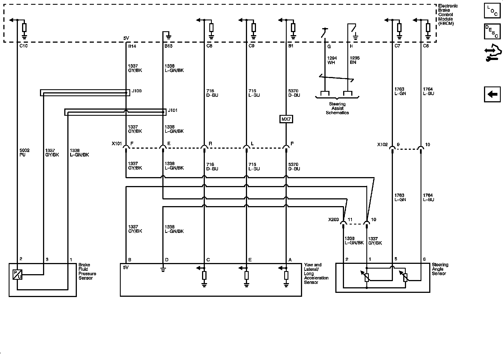

Operation CHARM
: Car repair manuals for everyone.
Home
>>
Cadillac
>>
2008
>>
SRX AWD V8-4.6L
>>
Repair and Diagnosis
>>
Brakes and Traction Control
>>
Antilock Brakes / Traction Control Systems
>>
Diagrams
>>
Electrical Diagrams
Electrical Diagrams
Antilock Brake System Schematics
Power, Ground and Serial Data

Wheel Speed Sensors

Indicator, Traction Control, and Brake Pedal Position

Stability Control System and
Brake Fluid
Pressure Sensor
